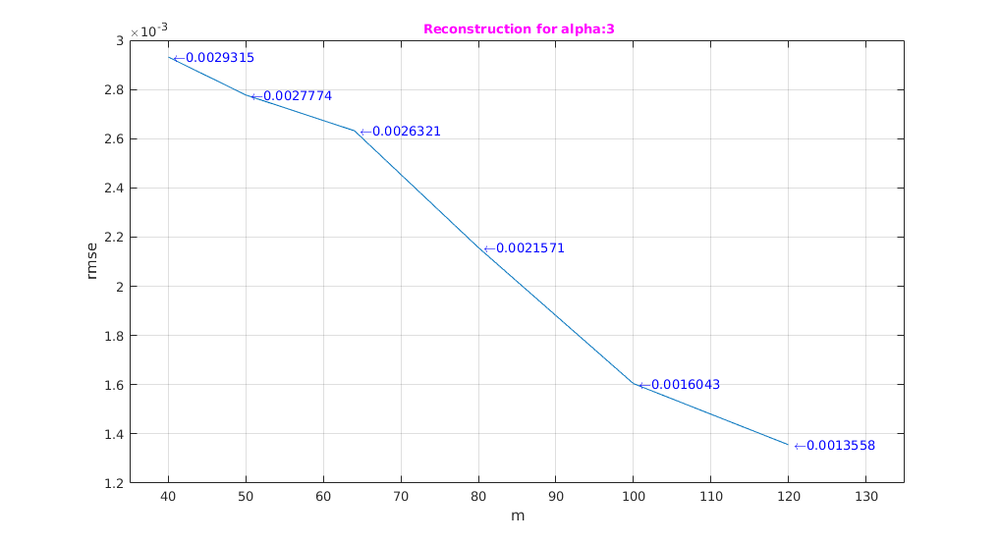
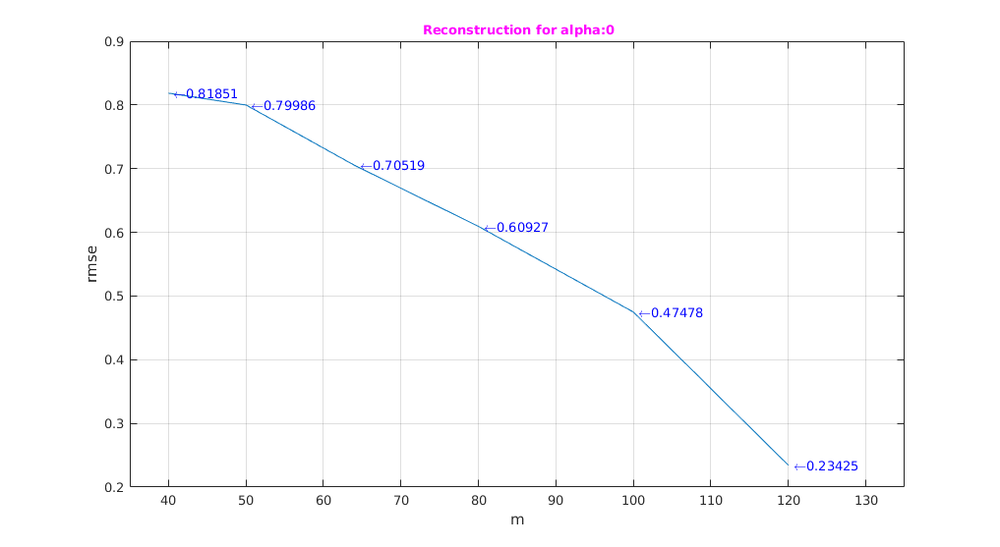
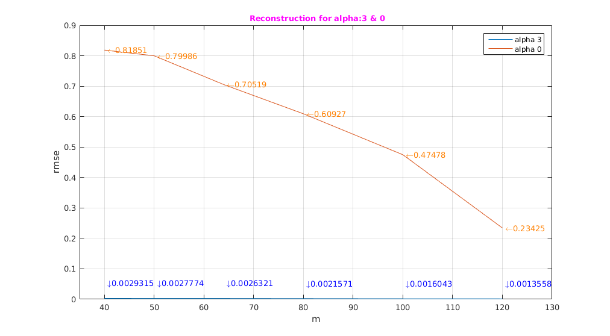

MAP Estimate
Assignment 5-5
Rollno: 163059009, 16305R011
Contents
Init
clear all;
n=128;
noOfX=10;
m = [40, 50, 64, 80, 100, 120];
1 Init With aplha as "3"
alpha=3;
1.1 Generating 10 x
mu=zeros(1,n); [ mvcovar ] = multivarientCoVar(n,alpha); rng(1) X = mvnrnd(mu,mvcovar,noOfX);
1.2 Finding Compressive measurement
noOfM=numel(m); aplha3RmsError=zeros(noOfM,1); fprintf('---------[alpha:%d]--------------- \n',alpha); for i=1:noOfM [y,phi,stdev] = genCM(X,m(i),n); error=0; for j=1:noOfX predictedX=reconstruct(y(:,j),phi,mvcovar,stdev,m(i)); error=rmse(predictedX,X(j,:)')+error; end error=error/noOfX; aplha3RmsError(i)=error; fprintf('m=%d\trmse:%f \n',m(i),error); end
---------[alpha:3]--------------- m=40 rmse:0.002931 m=50 rmse:0.002777 m=64 rmse:0.002632 m=80 rmse:0.002157 m=100 rmse:0.001604 m=120 rmse:0.001356
1.3 Plot
figure('name','For aplha:3') plot(m',aplha3RmsError),hold on for i=1:numel(m) txt1 = strcat('\color{blue} \leftarrow ',num2str(aplha3RmsError(i))); text(m(i),aplha3RmsError(i),txt1); end title('\fontsize{10}{\color{magenta} Reconstruction for alpha:3}'); xlabel('m'); ylabel('rmse'); xlim([min(m)-5,max(m)+15]), grid on, hold off;
2 Init With aplha as "3"
alpha=0;
2.1 Generating 10 x
mu=zeros(1,n); [ mvcovar ] = multivarientCoVar(n,alpha); rng(1) X = mvnrnd(mu,mvcovar,noOfX);
2.2 Finding Compressive measurement
noOfM=numel(m); aplha0RmsError=zeros(noOfM,1); fprintf('---------[alpha:%d]--------------- \n',alpha); for i=1:noOfM [y,phi,stdev] = genCM(X,m(i),n); error=0; for j=1:noOfX predictedX=reconstruct(y(:,j),phi,mvcovar,stdev,m(i)); error=rmse(predictedX,X(j,:)')+error; end error=error/noOfX; aplha0RmsError(i)=error; fprintf('m=%d\trmse:%f \n',m(i),error); end
---------[alpha:0]--------------- m=40 rmse:0.818513 m=50 rmse:0.799858 m=64 rmse:0.705190 m=80 rmse:0.609274 m=100 rmse:0.474784 m=120 rmse:0.234248
2.3 Plot
figure('name','For aplha:0') plot(m',aplha0RmsError),hold on for i=1:numel(m) txt1 = strcat('\color{blue} \leftarrow ',num2str(aplha0RmsError(i))); text(m(i),aplha0RmsError(i),txt1); end title('\fontsize{10}{\color{magenta} Reconstruction for alpha:0}'); xlabel('m'); ylabel('rmse'); xlim([min(m)-5,max(m)+15]), grid on, hold off;
3. Combined Plot for alpha:3 and 0
figure('name','For aplha:3 & 0') m=m'; plot(m,aplha3RmsError), hold on, plot(m,aplha0RmsError); for i=1:numel(m) txt1 = strcat('\color{blue} \downarrow ',num2str(aplha3RmsError(i))); text(m(i),aplha3RmsError(i)+0.05,txt1); txt1 = strcat('\color{orange} \leftarrow ',num2str(aplha0RmsError(i))); text(m(i),aplha0RmsError(i),txt1); end title('\fontsize{10}{\color{magenta} Reconstruction for alpha:3 & 0}'); xlabel('m'); ylabel('rmse'); xlim([min(m)-5,max(m)+10]), grid on; legend('alpha 3','alpha 0'); hold off;